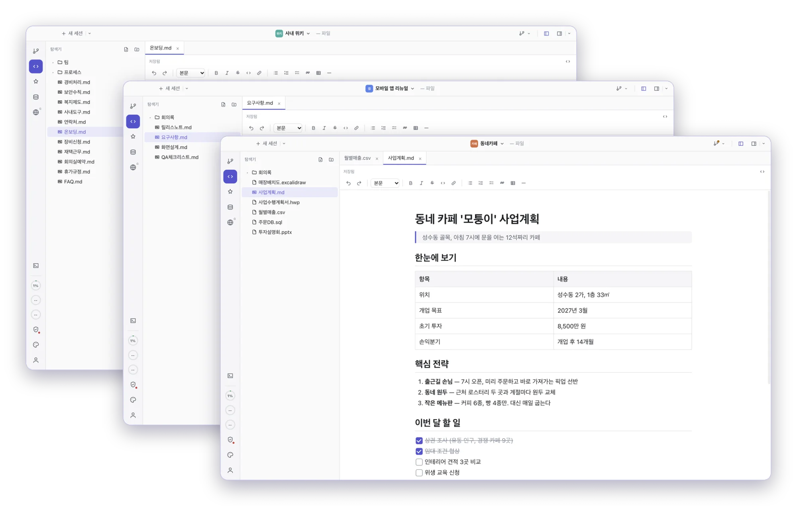
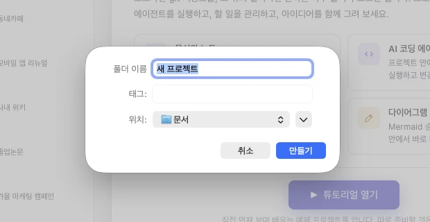
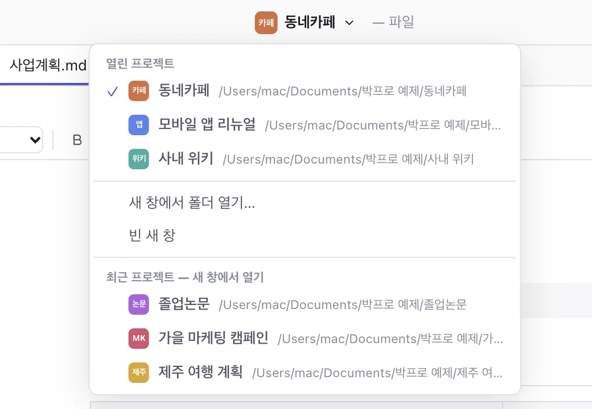
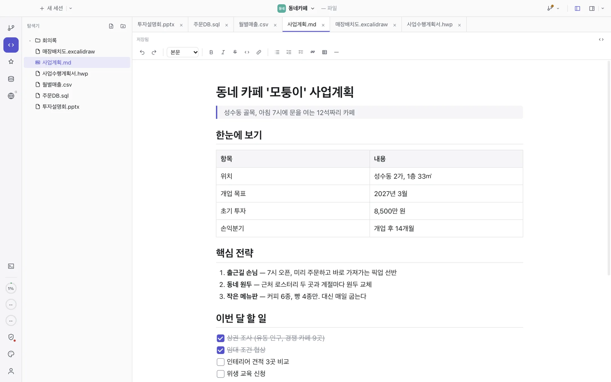
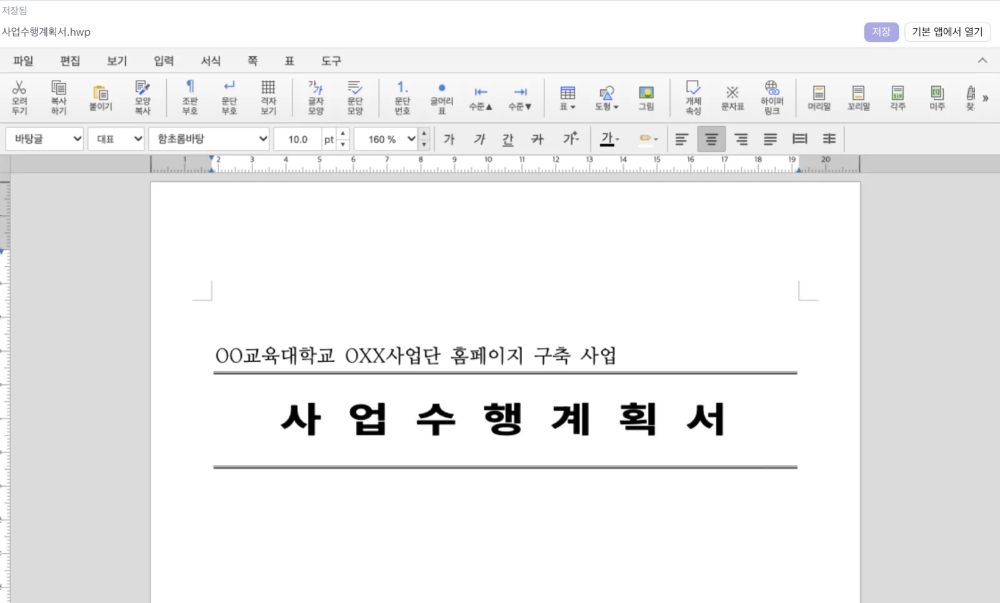
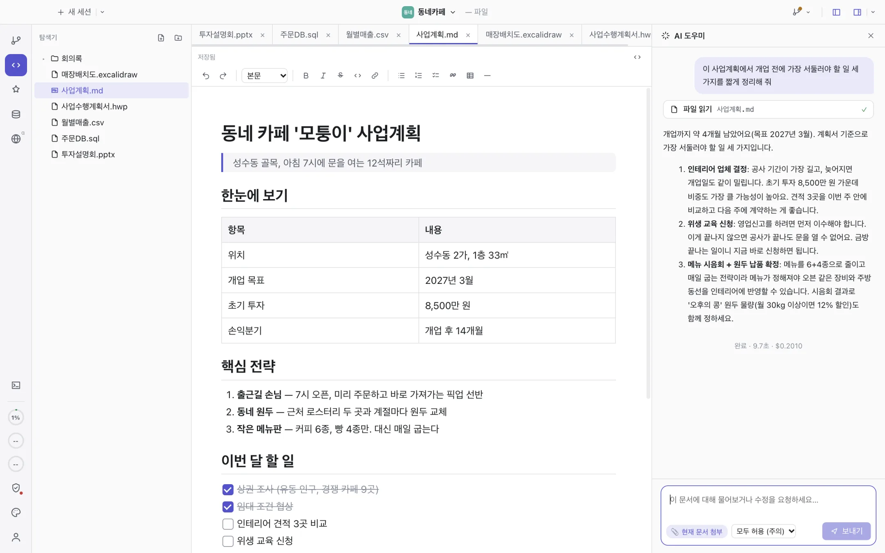
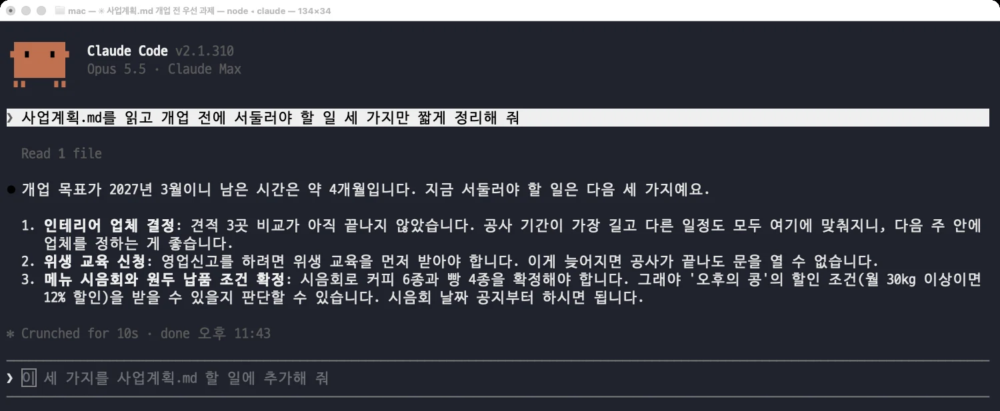
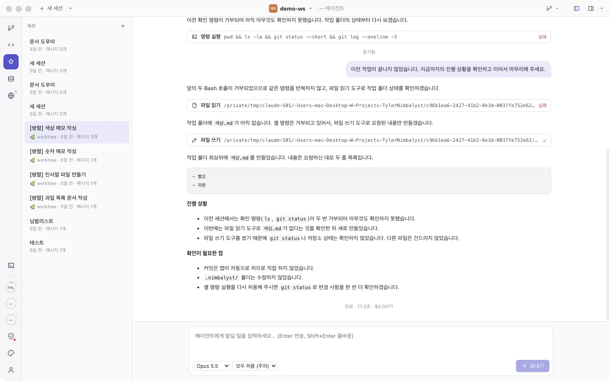

폴더 열기
이미 쓰던 폴더를 그대로 프로젝트로 엽니다. 파일을 옮기거나 가져올 필요가 없습니다.
회사 일, 공부, 개인 계획까지 — 여러 프로젝트를 한 앱에서 열고, 오가며, 관리하세요.
문서와 할 일, AI 에이전트가 프로젝트마다 한 창에 모입니다.
무료 · macOS(Apple Silicon) · Windows(x64) · 베타

프로젝트
앱을 켜면 시작 화면에 최근 프로젝트가 모여 있습니다. 폴더 하나가 곧 프로젝트라, 이미 쓰던 폴더를 그대로 열거나 새로 만들면 됩니다.
이미 쓰던 폴더를 그대로 프로젝트로 엽니다. 파일을 옮기거나 가져올 필요가 없습니다.
위치와 이름만 정하면 폴더를 만들고 바로 엽니다. 처음이라면 튜토리얼 프로젝트로 시작하세요.
이름으로 검색하고, 문서 수와 마지막으로 연 날짜를 한눈에 봅니다. 프로젝트마다 이니셜·색·이미지 아이콘을 붙일 수 있습니다.
창마다 파일 감시·터미널·에이전트가 따로 돌아 서로 섞이지 않습니다. 같은 폴더를 다시 열면 열려 있던 창으로 이동합니다.


파일 형식
프로젝트 폴더를 열면 안에 있는 파일을 탭으로 바로 보고 고칩니다. 바꾼 내용은 원래 파일에 그대로 저장됩니다.

한글
공공기관·학교 서식처럼 꼭 한글로 내야 하는 문서도 앱을 바꾸지 않고 고칩니다.
편집 엔진: rhwp (MIT)

AI 에이전트
보고 있는 문서를 붙여 물어보거나, 에이전트 모드에서 긴 작업을 통째로 맡깁니다. 에이전트는 Claude Code 위에서 열린 프로젝트 폴더를 기준으로 동작합니다.

오른쪽 AI 영역에서 현재 문서를 첨부해 요약·정리·수정을 요청합니다. 무엇을 읽고 고쳤는지 도구 카드로 보여 줍니다.
매번 확인 · 편집 자동 허용 · 계획만 세우기 · 모두 허용. 파일을 바꾸기 전에 승인하도록 정할 수 있습니다.
트래커 카드를 여러 개 골라 병렬로 실행합니다. 일마다 git worktree를 따로 만들어 서로 섞이지 않고, 끝나면 검토 후 병합합니다.
작업 이력
터미널에서 Claude Code로 일하면 창을 닫는 순간 무엇을 시켰고 무엇이 바뀌었는지 다시 찾기 어렵습니다. 박프로는 모든 에이전트 작업을 프로젝트별 기록으로 남겨 바로 해결합니다.


트래커
작업·버그·기획·아이디어·결정·기능을 칸반 보드로 관리합니다. 항목은 프로젝트 안의 마크다운 파일이라 git으로 함께 기록됩니다.
개인정보와 비용
박프로는 내 컴퓨터에서만 동작하는 앱입니다. 별도의 박프로 서버나 회원가입이 없습니다.
문서는 열어 둔 프로젝트 폴더에 그대로 있고, 어디에도 업로드하지 않습니다.
AI 기능을 쓸 때 보낸 질문과 첨부한 문서, 에이전트가 읽은 파일이 Claude(Anthropic)로 전달됩니다.
이 컴퓨터의 Claude Code 로그인(구독)이나 직접 넣은 API 키를 씁니다. API 키는 키체인에 암호화해 저장합니다.
오픈소스
설치
내 컴퓨터에 맞는 설치 파일을 받습니다.
최신 버전 정보를 불러오는 중…
아직 코드 서명을 받지 않은 앱이라 처음 한 번 경고가 뜹니다.
Bakpro.app을 응용 프로그램 폴더로 옮긴 뒤, Finder에서 앱을 우클릭 → 열기 합니다. 또는 터미널에서 한 번 실행하세요.
xattr -dr com.apple.quarantine /Applications/Bakpro.app창에서 추가 정보 → 실행을 누릅니다. git 기능은 Git for Windows가 있으면 쓸 수 있습니다.
이 컴퓨터에서 Claude Code에 로그인한 적이 있으면 바로 동작합니다. 없다면 설정 → 에이전트 제공자에서 Anthropic API 키를 넣고 "API 키 사용"을 켜세요.